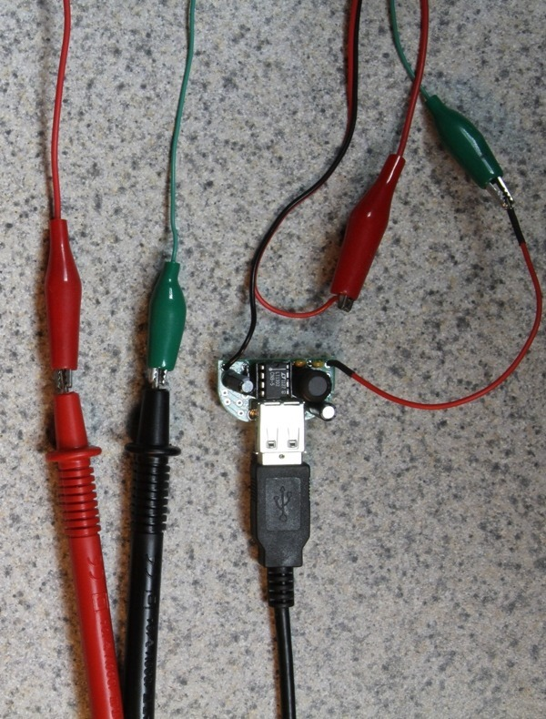

Find a weak supply with a load and a meter
Measure source resistance, check the meter’s influence and distinguish a weak connection from current limiting.
Build a five-volt source with a deliberate weak connection
Use an isolated 5.0 V bench supply with a 30 mA current limit, 100 Ω and 220 Ω resistors rated ¼ W or greater and a multimeter. With power off, put the 100 Ω resistor between the supply positive terminal and a node called OUT. Both the source negative and every load return go to the same return strip. OUT is your model equipment connector. The resistor represents a bad series joint, safely and repeatably.
- With no load, measure OUT to return and expect nearly 5.0 V.
- Power off, put 220 Ω from OUT to return, and power on. Expect about 3.44 V at OUT, 1.56 V across 100 Ω and 15.6 mA from Vload/Rload. Write down the supply terminal voltage as well as OUT.
- Replace the 220 Ω load with a second 100 Ω. Expect 2.50 V and 25 mA. A healthy 5 V reading with the load removed was weak evidence of a good connector.
- Restore the 220 Ω load and power off to remove the series resistor, joining those two points only in this trainer. Now expect about 5 V at OUT. Compare before and after with the same load.

Photo by Zeroping, with on-page callouts. Original photo · CC BY 4.0.


Photo by Bill Earl for Adafruit, scaled for the course. Original photo · CC BY-SA 3.0.
See DC readings and probe placement in the multimeter demonstration.
Prove which path loses voltage
Calculate equivalent series resistance as (Vopen − Vload)/Iload using both load readings from the test with the series resistor fitted. If the supply terminals also fall and the front panel shows constant-current mode, recheck the current limit and wiring before diagnosing the series path. Check directly across suspect joints while current flows. The same idea applies to an oxidised sensor terminal, a weak adapter lead or a blown protection device with a high-impedance meter on either side.
Extension. Measure a 1 MΩ resistor on a detached board first alone and then with a second 1 MΩ across it. The expected parallel result is 0.50 MΩ. To see voltage-mode loading, use a separate 5 V divider with two 1 MΩ resistors. For a verified 10 MΩ meter, the expected measured midpoint is about 2.38 V. Compare against the actual input specification of your meter.
Record the transfer test
Give someone else the unloaded output, loaded output, drop across suspect part and supply mode. Ask them to locate the weak link without seeing the circuit. Save the two load readings and your calculated series resistance.
Related lesson and source material
T54 · Source resistance, loading and measurement uncertainty.